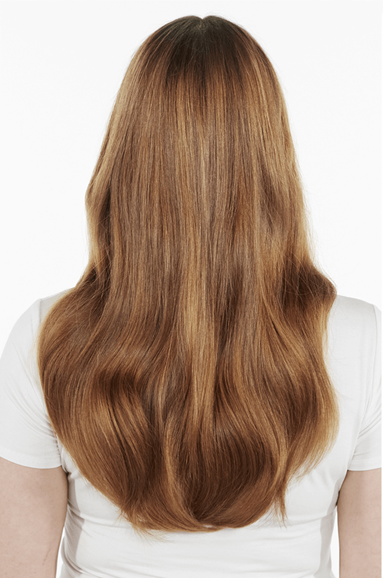

Keep Me
Vivid
Delikatny szampon
do włosów farbowanych
Profesjonalna pielęgnacja przedłużająca trwałość koloru
- Zapobiega szybkiemu wypłukiwaniu się koloru
- Dodaje włosom blasku
- Pomaga zachować intensywność koloryzacji przez 65 dni
- Ma piękny zapach
Intensywny kolor na dłużej
Gama do włosów farbowanych na intensywne, szybko wypłukujące się
kolory. Kwasowa
formuła domyka łuskę włosa, nadając włosom
blasku, pozostawiając je miękkie, bez
jednoczesnej utraty
koloru.
Sposób użycia:
Krok 1: Nałóż na wilgotne włosy niewielką ilośc produktu.
Krok 2: Wmasuj do wytworzenia piany.
Krok 3: Dokładnie spłucz.
Dla lepszego efektu, szampon stosuj z odżywką i sprayem Keep Me Vivid
Przed
Po*
